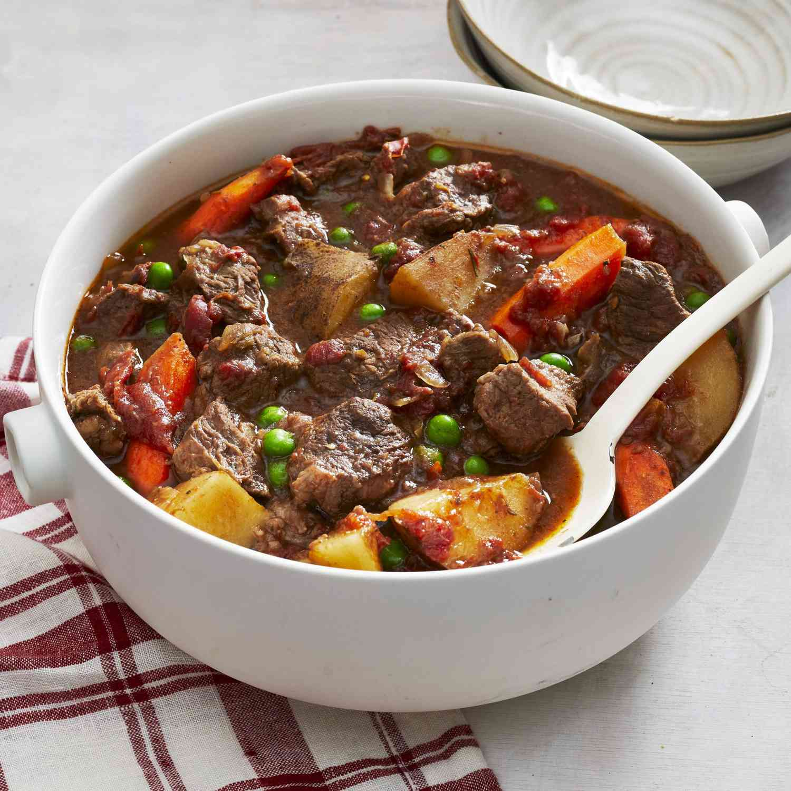

Christmas Eve Beef Stew

How to make the best beef stew for Christmas to share with family
This is a family tradition for Christmas Eve! Serve with a green salad and a loaf of warm bread.
Three steps for an easy recipe that can also be made in a slow cooker
Ingredients
- 2 ½ pounds beef stew meat, diced into 1 inch pieces
- 1 (28 ounce) can stewed tomatoes, with juice
- 1 cup chopped celery
- 4 carrots, sliced
- 3 potatoes, cubed
- 3 onions, chopped
- 3 ½ tablespoons tapioca
- 2 cubes beef bouillon
- ⅛ teaspoon dried thyme
- ⅛ teaspoon dried rosemary
- ⅛ teaspoon dried marjoram
- ¼ cup red wine
- 1 (10 ounce) package frozen green peas, thawed
Directions
- Preheat the oven to 250 degrees F (120 degrees C).
- Place beef, tomatoes, celery, carrots, potatoes, onions, and tapioca into a Dutch oven. Season with beef bouillon, thyme, rosemary, and marjoram; stir in red wine. Place the lid on the Dutch oven.
- Bake for 5 to 6 hours in the preheated oven. Add peas during last half hour of cooking
Go back to main page